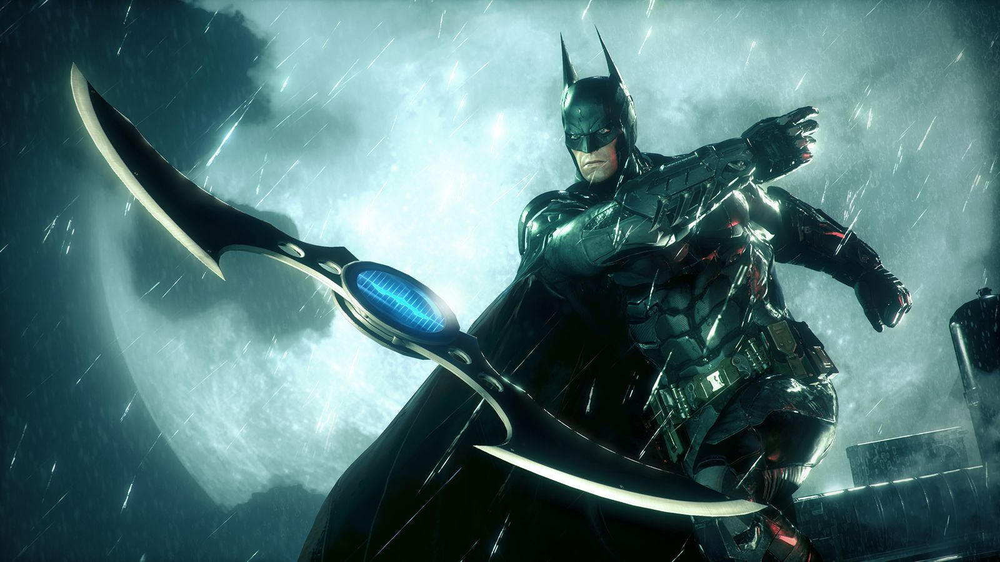

This Is A Debate Between The BAT and The JOKER

Brief History Between Batman And The Joker:
The Batman-Joker rivalry
Born in the 1940s, has evolved over the decades into one of the most iconic conflicts in comic book history. Initially marked by the Joker's sadistic violence and Batman's unwavering pursuit of justice, their dynamic shifted through different eras, from the campy 1960s to the psychologically complex '80s. "The Killing Joke" graphic novel solidified the Joker's backstory and obsession with Batman. In the modern era, their rivalry has grown even more intense, exploring themes of chaos, sanity, and the nature of heroism. Adaptations in various media have further cemented their legendary conflict, making it an enduring cornerstone of Batman's character and Gotham City's mythology.
| BATMAN |  |
JOKER |
|---|---|---|
|
Moral Code: Batman adheres to a strict moral code that prohibits killing, while the Joker revels in chaos and often commits heinous acts without remorse. |

|
Complexity and Psychology: The Joker's intricate and psychologically rich character offers depth and explores mental health themes, adding a layer of fascination that Batman, with a more straightforward sense of justice, often lacks. |
|
Strives for Justice: Batman seeks to bring criminals to justice through the legal system, while the Joker seeks to undermine and corrupt it. |
Unpredictability: The Joker's unpredictable nature and flexible approach in his actions and plans make him a captivating and formidable adversary, challenging both Batman and the audience to keep guessing. |
|
|
Enduring Legacy: Batman has been a beloved and enduring character in popular culture for over 80 years, inspiring countless stories, adaptations, and a dedicated fan base. |

|
Symbol of Anarchy and Freedom: The Joker embodies anarchy and the defiance of societal norms, providing a thought-provoking perspective on the balance between order and chaos, a stark contrast to Batman's pursuit of justice and order. |
BATMAN IS BETTER THE JOKER
Batman is often considered superior to the Joker due to his unwavering commitment to justice and his unyielding moral code. Unlike the Joker, who revels in chaos and anarchy, Batman operates within the confines of the law, using his intellect, combat skills, and technological prowess to protect Gotham City. Batman's tragic origin story and personal sacrifices further underscore his dedication to preventing others from experiencing similar pain. He channels his grief and anger into a mission for the greater good, striving to create a safer, more just society. Additionally, Batman's ability to outsmart and outmaneuver his adversaries, including the Joker, demonstrates his strategic prowess and resilience. While the Joker represents chaos and nihilism, Batman stands as a symbol of hope, demonstrating that even in the darkest of times, one can choose to rise above and make a positive impact on the world.
JOKER IS BETTER THAN THE BATMAN
The Joker, as a character, holds a unique allure that surpasses Batman in many ways. He embodies an enigmatic complexity and psychological depth that delves into the realms of mental health and human nature. The Joker's unpredictability and adaptable nature make him a constantly engaging character, challenging both his foes and the audience. Unlike Batman, who follows a more predictable path of justice, the Joker stands as a symbol of anarchy and freedom, pushing the boundaries and inviting contemplation on societal norms. Ultimately, the Joker's ability to captivate and question the very essence of order and chaos places him on a pedestal that Batman, despite his heroism, cannot quite reach.